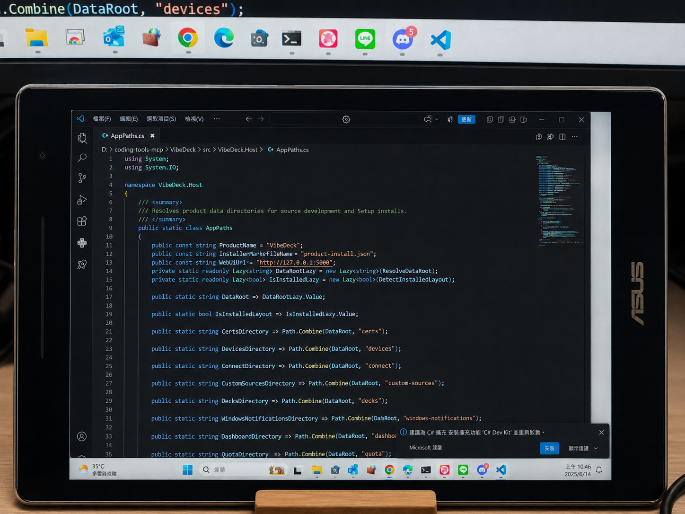

01 / REAL WINDOWS DISPLAYA monitor, not a mockup.
Real Windows Display
REAL WINDOWS.
ANY BROWSER.
Turn a spare phone, tablet, or browser-capable screen into a real Windows display or a purpose-built HTML Deck.
NO CLIENT APP REQUIRED
USE THE SCREEN YOU ALREADY OWN
USE THE SCREEN YOU ALREADY OWN
